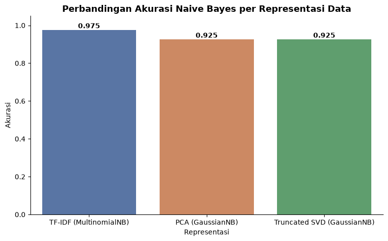
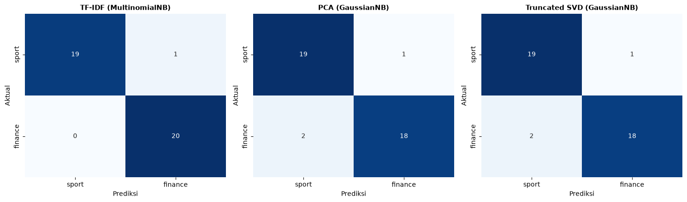

Modeling: Klasifikasi Berita dengan Naive Bayes#
Tahap ini melatih model klasifikasi Naive Bayes untuk membedakan artikel sport dan finance, menggunakan tiga representasi data yang telah disiapkan pada tahap Vectorization: TF-IDF, PCA, dan Truncated SVD. Performa ketiganya dibandingkan untuk melihat representasi mana yang memberikan hasil terbaik pada dataset ini.
Kenapa Naive Bayes?
Naive Bayes adalah salah satu algoritma klasifikasi paling umum untuk data teks karena sederhana, cepat dilatih, dan bekerja cukup baik meskipun asumsinya (fitur saling independen) jarang benar-benar terpenuhi di dunia nyata. Variannya dipilih sesuai jenis data:
MultinomialNB: cocok untuk data non-negatif seperti TF-IDF (mewakili frekuensi/bobot kata).
GaussianNB: cocok untuk data kontinu yang bisa bernilai negatif, seperti hasil PCA/SVD.
import pandas as pd
import numpy as np
import matplotlib.pyplot as plt
import seaborn as sns
from sklearn.model_selection import train_test_split
from sklearn.naive_bayes import MultinomialNB, GaussianNB
from sklearn.metrics import accuracy_score, classification_report, confusion_matrix
df_tfidf = pd.read_excel("../data/dataset_tfidf.xlsx")
df_pca = pd.read_excel("../data/dataset_pca.xlsx")
df_svd = pd.read_excel("../data/dataset_svd.xlsx")
print("TF-IDF:", df_tfidf.shape)
print("PCA :", df_pca.shape)
print("SVD :", df_svd.shape)
TF-IDF: (200, 2560)
PCA : (200, 108)
SVD : (200, 109)
1. Siapkan Data Latih & Data Uji#
Pembagian data latih/uji dibuat identik untuk ketiga representasi (berdasarkan doc_id yang sama), agar perbandingan performa antar representasi adil - bukan disebabkan oleh perbedaan pembagian data.
doc_id_latih, doc_id_uji = train_test_split(
df_tfidf["doc_id"], test_size=0.2, stratify=df_tfidf["label_asli"], random_state=42
)
print(f"Jumlah data latih: {len(doc_id_latih)}")
print(f"Jumlah data uji : {len(doc_id_uji)}")
Jumlah data latih: 160
Jumlah data uji : 40
def siapkan_fitur_label(df, kolom_buang):
fitur = df.drop(columns=kolom_buang)
label = df["label_asli"]
return fitur, label
kolom_bukan_fitur = ["doc_id", "label_asli"] + [c for c in df_tfidf.columns if c.startswith("label_")]
X_tfidf, y_tfidf = siapkan_fitur_label(df_tfidf, kolom_bukan_fitur)
X_pca, y_pca = siapkan_fitur_label(df_pca, [c for c in df_pca.columns if c in kolom_bukan_fitur])
X_svd, y_svd = siapkan_fitur_label(df_svd, [c for c in df_svd.columns if c in kolom_bukan_fitur])
print("Jumlah fitur TF-IDF:", X_tfidf.shape[1])
print("Jumlah fitur PCA :", X_pca.shape[1])
print("Jumlah fitur SVD :", X_svd.shape[1])
Jumlah fitur TF-IDF: 2556
Jumlah fitur PCA : 104
Jumlah fitur SVD : 105
2. Latih & Evaluasi Naive Bayes untuk Tiap Representasi#
def latih_dan_evaluasi(X, y, doc_id_kolom, model_class, nama):
mask_latih = doc_id_kolom.isin(doc_id_latih)
mask_uji = doc_id_kolom.isin(doc_id_uji)
X_latih, X_uji = X[mask_latih], X[mask_uji]
y_latih, y_uji = y[mask_latih], y[mask_uji]
model = model_class()
model.fit(X_latih, y_latih)
prediksi = model.predict(X_uji)
akurasi = accuracy_score(y_uji, prediksi)
print(f"=== {nama} ===")
print(f"Akurasi: {akurasi:.4f}\n")
print(classification_report(y_uji, prediksi))
return {"nama": nama, "akurasi": akurasi, "y_uji": y_uji, "prediksi": prediksi}
hasil_tfidf = latih_dan_evaluasi(X_tfidf, y_tfidf, df_tfidf["doc_id"], MultinomialNB, "TF-IDF (MultinomialNB)")
=== TF-IDF (MultinomialNB) ===
Akurasi: 0.9750
precision recall f1-score support
finance 0.95 1.00 0.98 20
sport 1.00 0.95 0.97 20
accuracy 0.97 40
macro avg 0.98 0.97 0.97 40
weighted avg 0.98 0.97 0.97 40
hasil_pca = latih_dan_evaluasi(X_pca, y_pca, df_pca["doc_id"], GaussianNB, "PCA (GaussianNB)")
=== PCA (GaussianNB) ===
Akurasi: 0.9250
precision recall f1-score support
finance 0.95 0.90 0.92 20
sport 0.90 0.95 0.93 20
accuracy 0.93 40
macro avg 0.93 0.93 0.92 40
weighted avg 0.93 0.93 0.92 40
hasil_svd = latih_dan_evaluasi(X_svd, y_svd, df_svd["doc_id"], GaussianNB, "Truncated SVD (GaussianNB)")
=== Truncated SVD (GaussianNB) ===
Akurasi: 0.9250
precision recall f1-score support
finance 0.95 0.90 0.92 20
sport 0.90 0.95 0.93 20
accuracy 0.93 40
macro avg 0.93 0.93 0.92 40
weighted avg 0.93 0.93 0.92 40
3. Bandingkan Ketiga Representasi#
semua_hasil = [hasil_tfidf, hasil_pca, hasil_svd]
ringkasan = pd.DataFrame({
"Representasi": [h["nama"] for h in semua_hasil],
"Akurasi": [h["akurasi"] for h in semua_hasil],
"Jumlah Fitur": [X_tfidf.shape[1], X_pca.shape[1], X_svd.shape[1]],
})
ringkasan
| Representasi | Akurasi | Jumlah Fitur | |
|---|---|---|---|
| 0 | TF-IDF (MultinomialNB) | 0.975 | 2556 |
| 1 | PCA (GaussianNB) | 0.925 | 104 |
| 2 | Truncated SVD (GaussianNB) | 0.925 | 105 |
fig, ax = plt.subplots(figsize=(8, 5))
sns.barplot(data=ringkasan, x="Representasi", y="Akurasi", hue="Representasi",
palette=["#4C72B0", "#DD8452", "#55A868"], legend=False, ax=ax)
for i, v in enumerate(ringkasan["Akurasi"]):
ax.text(i, v + 0.01, f"{v:.3f}", ha="center", fontweight="bold")
ax.set_ylim(0, 1.05)
ax.set_title("Perbandingan Akurasi Naive Bayes per Representasi Data", fontsize=13, fontweight="bold")
sns.despine(ax=ax)
plt.tight_layout()
plt.show()

Confusion Matrix Tiap Representasi#
fig, axes = plt.subplots(1, 3, figsize=(15, 4.5))
for ax, h in zip(axes, semua_hasil):
cm = confusion_matrix(h["y_uji"], h["prediksi"], labels=["sport", "finance"])
sns.heatmap(cm, annot=True, fmt="d", cmap="Blues", ax=ax,
xticklabels=["sport", "finance"], yticklabels=["sport", "finance"], cbar=False)
ax.set_title(h["nama"], fontsize=11, fontweight="bold")
ax.set_xlabel("Prediksi")
ax.set_ylabel("Aktual")
plt.tight_layout()
plt.show()

Ringkasan#
Ketiga representasi (TF-IDF, PCA, Truncated SVD) dievaluasi menggunakan pembagian data latih/uji yang identik untuk memastikan perbandingan yang adil.
TF-IDF menggunakan seluruh fitur (kata unik) tanpa reduksi, sedangkan PCA dan SVD menggunakan fitur yang jauh lebih sedikit hasil reduksi dimensi.
Perbandingan akurasi di atas menunjukkan trade-off antara jumlah fitur (dan biaya komputasi) dengan performa klasifikasi - apakah reduksi dimensi mengorbankan akurasi secara signifikan, atau justru performanya setara (atau lebih baik) dibanding representasi penuh.
Hasil ini menjadi dasar untuk tahap Evaluation berikutnya, termasuk analisis lebih lanjut mengenai representasi mana yang paling sesuai untuk deployment.